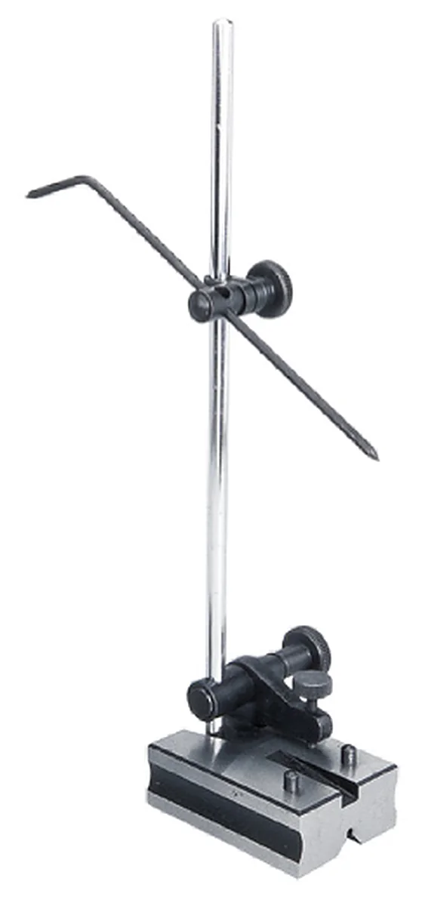

GROZ · Precision Tools
Universal Surface Gauge
CAT NR SG/9-12 · ORD NR 03201
| CAT NR (catalogue number) | SG/9-12 |
|---|---|
| ORD NR (order number) | 03201 |
| Size (inch) | 3-1/8 x 2-1/2 |
| Size (mm) | 80 x 63 |
| Box quantity | 15 |
Open in the catalogue The catalogue PDF, page 34
From the GROZ Precision CA-03 catalogue. Not yet verified: these details were read from the printed catalogue automatically; check the catalogue page before ordering.